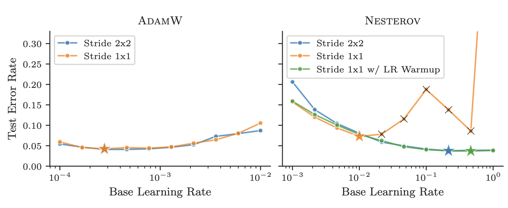

Challenges in Optimizer Benchmarking
Everyone and their mom is talking about AI, publication counts are rising to meet that interest, and exponential trends are everywhere—mention counts for topics like AI, DL, and ML on Arvix, Google, and Twitter. Psychologically, this exponential rise in conversation leads into the inevitable human need to look for some sort of clear signal which we can ground ourselves in, some system to lean on as a quantifiable explanation of the chaos.
Tools which provide a reasonable and quantifiable line to compare wide swaths of work against as a fair comparator of performance are in many ways priceless, difficult to formulate, and contentious by their very nature. But while there are benchmarks out there such as the famous MLPerf benchmark for evaluating performance of models, there isn't a similar equivalent for optimizers. That's the environment which Benchmarking Neural Network Training Algorithms from Dahl et al. (2023) enters into with the new and exciting "Algoperf: Training Algorithms" benchmark, promising a new and exciting API framework for quantifying and comparing a growing field of optimizer algorithms.
With the inaugural results for the Algoperf benchmark having been released only a few days ago, I'm hoping to spend some time today breaking down how exactly the Algoperf benchmark really works to quantify as best as it can what performance really means for optimizers. This can hopefully be both an educational opportunity to put the finger on the pulse of where this new and exciting benchmark is taking the evaluation of something as multidimensional as an optimizer and may provide a look into the contours of where the work on optimizers is moving of late.
What makes an idea worthwhile?
Everyone and their mom is talking about AI, publication counts are rising to meet that interest, and exponential trends are everywhere—mention counts for topics like AI, DL, and ML on Arvix, Google, and Twitter. Psychologically, this exponential rise in conversation leads into the inevitable human need to look for some sort of clear signal which we can ground ourselves in, some system to lean on as a quantifiable explanation of the chaos.
Tools which provide a reasonable and quantifiable line to compare wide swaths of work against as a fair comparator of performance are in many ways priceless, difficult to formulate, and contentious by their very nature but while there are benchmarks out there such as the famous MLPerf benchmark for evaluating performance of models, there isn't a similar equivalent for optimizers. That's the environment which Benchmarking Neural Network Training Algorithms from Dahl et al. (2023) enters into with the new and exciting ''Algoperf: Training Algorithms'' benchmark, promising a new and exciting API framework for quantifying and comparing a growing field of optimizer algorithms.
With the inaugural results for the Algoperf benchmark having been released only a few days ago, I'm hoping to spend some time today breaking down how exactly the Algoperf benchmark really works to quantify as best as it can what performance really means for optimizers. This can hopefully be both a educational opportunity to put the finger on the pulse of where this new and exciting benchmark is taking the evaluation of something as multidimensional as an optimizer and may provide a look into the contours of where the work on optimizers is moving of late.
What is an Optimizer
Implementing an AI training pipeline front to end entails a huge swath of moving parts from dataset through model architecture to a loss function and of course, our focus today, optimizers. Optimizers always struck me as an underdiscussed part of AI research as literally billions of dollars are burnt quarter after quarter on training increasingly giant and complicated models to eek out bits of performance and the choice of optimizer algorithm for your AI training can have tremendous effects on wasted resources unless you can have confidence that your algorithm of choice is the best one to put the weight of tremendous training runs onto.

The Trillion dollar challenge: You're dropped with $10B of GPUs into the mountains without a map and racing against the clock to navigate down to the valley below...
If you aren't deeply emeshed into AI training it would be worthwhile to provide a brief description of what an optimizer even serves to do in the first place: Optimizer algorithms are responsible for taking how wrong an AI is at the task it's trying to get good at and translating that measurement of error into how far each and every parameter dial in your AI model should be turned to try and bring that error down. Pretty important work.
Technically, when training a model we're given:
- A Dataset \( D = \{(x_i,y_i)\}^{N}_{i=1} \) where \(x_i\) are input features and \(y_i\) are target labels.
- A Model \(f(x, \theta)\) with parameters \(\theta\).
- A Loss function \(L(f(x, \theta), y)\) that measures the difference between predicted output \( f(x, \theta) \) and the true output \(y\).
The goal is then to find the optimal parameters \( \theta^{*} \) that minimizes the loss function over the dataset:
\[ \theta^* = \arg\min_{\theta} \frac{1}{N} \sum_{i=1}^N L(f(x_i; \theta), y_i) \]
where the the value of each parameter is updated according to some optimizing rule \( O(x) \) resulting in the update pattern of:
\[ \theta_{t+1}= \theta_t - \eta O(\nabla_{\theta}L(f(x, \theta), y), ...) \]
A common metaphor for this in physical space is to imagine the landscape of possible model parameter settings as a complex mountain range. When we first initialize a model it's located somewhere in this forest of all possible model parameter settings and we need some intelligent method to descend down out of that dark forest towards the society at the bottom of the valley, wherever that is. In this way an optimizer is a boiling down of the instincts of a seasoned hiker—a set of hard-learned rules which we can lean on as we blindly feel our way down the mountain-side towards a luxurious life in the valley. And oh how luxurious it is: the VC talking heads at Sequoia capital, who bankroll a tremendous amount of innovation in The Valley, recently estimated that roughly $200 billion in CAPEX was burnt in Q1 of 2024 on the GPUs and electricity needed to, in large part, run the calculations of parameter adjustments needed to bring ginormous models like Google's Gemini, Meta's LLama, and of course OpenAI's ChatGPT down out of the mountains where they start and into the valleys of usability for mass audiences. This is where the importance of Optimizers and of being able to talk clearly about where optimizers are improving on each other or better suited for particular tasks comes into direct unavoidable focus.
Avoiding Credibility Collapse from flawed Criterion
The fundamental problem Algoperf rises to address is that no matter the paper you choose to pick out from a crowd you'll likely find some line in there talking about how "[their] Algorithm A outperforms Algorithm B by C%" and while at a glance those types of sentences seem to attribute some reason to use an author's algorithm over its competitors, digging in deeper, papers are encouraged to (for the sake of garnering attention) inflate the impact of their finding and minimize the number of words spent explaining where their work doesn't actually outperform pre-existing methods, and nowhere is this more obvious than in discourse around choice of Optimizer.
In actuality it's exceedingly difficult to figure out which Optimizer is going to be better as a default pick for your AI training experiments or how to set up your optimizer for the specific project which you're working on. As benchmarks for optimizers have fallen behind the conversation, consensus has shattered, and the forest has been lost for the trees so to say. How to design an optimizer which can work on a wide range of tasks, or even just knowledge of which optimizers are truly durably most useful for particular use cases has receded into the cloud of industry secrets as conversation stalls out on vague and untested claims and the inertia of unknowingly replicating a one-off author’s choice carries forward unbeknownst to the repercussions of said choices. This is the fundamental challenge which Algoperf aims to quantify and clarify in its benchmarking.
The Algoperf team points out four fundamentally problematic dimensions along which previous attempts to quantify comparisons of optimization algorithms in the field have strayed from being maximally informative:
-
Difficult in Measuring Training speed
One of the fundamental strengths which an optimization algorithm can claim over its peers is that it will guide your model to the minimum achievable loss quicker than the alternative choices. But the Algoperf team highlights how in many of the papers describing why to use one optimization algorithm choice over another, arguments resort to the language of generalities (Ex: "frequently delivers faster convergence") as opposed to more specific measurements of how reliably faster convergence actually is. In part this is because optimizers tend to outperform or underperform each other differently based on how you decide to measure their error over time or at which point you decide to stop training and compare the two.
Algoperf chooses to measure training speed by picking for every included workload a "near-state-of-art" out-of-distribution error rate as a useful heuristic standard to compare every optimization algorithm against.
-
Dependence of Results on Workload
This section draws attention to the hard reality benchmarks love to tip-toe around: that the usefulness of an optimization algorithm ought to be judged on the basis of how good it is at getting tasks done which we care about and that to really quantify what choice is best you need to consider quite deeply which workload you’re really trying to get done in the first place. Which jobs are most representative of what optimization algorithms are going to be more used for?
-
Sensitivity of Results to Model Architecture
Another issue with leaving optimizer comparison up to the author is that optimizers seem to perform far differently depending on small changes in the base model which they're optimizing. To relate this to the metaphor of descending the valley: the shape of the valley (aka the model space we're in) influences tremendously which set of rules are really going to get us down the fastest. In fact the goal should be to have an optimization algorithm which works the best on as many valleys as possible (or at least a method to know which ones we should be applying it to) and conversation currently tends to bring out one optimization algorithm as generally applicable when the authors are in actuality just observing that it works well on a specific landscape.
"After changing from a standard \(2 \times 2\) stride to a \(1 \times 1\) stride, the performance of Nesterov drops significantly while AdamW is largely unaffected. Adding a \(\eta \) warmup [or \(\nabla \) clipping] allows Nesterov to recapture its original performance."
Algoperf chooses to address this by folding the model architecture into the workload itself and essentially holding the architecture constant for a task in order to preserve more apples-to-apples comparative ability across optimizers on the same task.
-
Consideration of Hyperparameter Tuning
The more nuanced difficulty with evaluating optimizers which the authors highlight in their attempt to define a real method for quantifying the whole field of optimizers is that optimizers come in many different forms and in many cases are built using hyperparameters which are meant to be tuned to the specific task at hand. This means that some optimizers have a plug-and-play nature where you can add them into your model without adjusting the hyperparameter of your optimizer while others have an additional barrier to effective application but potential room for quantifiable benefit when used best. Some optimizers have different sets of hyperparameters meant to be tuned and on top of that the method of tuning the hyperparameters becomes an axis along which to differentiate optimizers which is unclear as to whether it should or shouldn't matter.

Even changes in the time over which the tuning of hyperparameters takes place can lead to thinking one model achieves better results.
This reveals a hidden metric for how susceptible any given optimizer algorithm is to changes in workload causing the chosen hyperparameters to suddenly dramatically underperform where they would have been if hyperparameters were reselected.
\[ \Phi(H) = \min_{h \in H} (\varphi(h, H)) = \min_{h \in H} \left( \max_{w} \left| \frac{\text{val}(w, h) - \text{val}_H(w)}{\text{val}_H(w)} \right| \right) \]
When an optimizer has a space of hyperparameter values to search through we can define some set of possible hyperparameters \(H \) out of which there is some \( \text{val}(w, h) \) which is the validation error for any specific hyperparameter value \(h \in H \). We can then define \( \text{val}_H(w) \) to be the optimal validation error which we'd get from the best possible hyperparameter choice within \(H \). A naive approach to choosing \(h \) would be picking some \(h \in H\) which minimizes how far that choice puts error from the optimal on all of the available workloads. In this way \(\Phi(H) \) essentially puts a value to how sensitive a given optimizer algorithm is to the specific workload it's being applied to.
Algoperf's Testing Regime
Algoperf operates by compiling an aggregate benchmark score of the time-to-result for a relevant real-world task where the timer is stopped when training reaches a pre-specified goal rate of error on the model's validation / test sets for a fixed hardware configuration. Optimizers submitted to the benchmark are given choices of a few generic tuning methods which any given algorithm is allowed to use and the creators of the benchmark have written a custom API which works to both limit the meddling of the optimizer in the model and lumps any changes to the workload made by the optimizer into the time which the optimizer is limited to. This allows workload alterations but at a cost representative of the cost of time-to-performance which matters for developers. At the end of the day the benchmark is intended to give the flexibility of picking optimizers with all sorts of different pre-tuning required but aspires to incorporate the cost of that additional complexity to get working optimally into the metric for evaluation.
In order to evaluate any particular optimizing algorithm a runtime budget is picked alongside a maximum runtime before stopping; this is usually four-thirds of the baseline runtime set by testing that runtime budget on standard optimizers, and a validation loss cutoff is set based on how far those generic optimizers on that workload were found by Algoperf to on average end out on validation and testing loss.
As for getting one number to rule them all to evaluate an optimizer by, Algoperf has its own way of quantifying that as well: Algoperf asks the questions of what fraction of workloads an optimizer is within some ratio of having the best training time on that workload. Given the raw training time \(t_{s,w} \) for a set of \(k \) submissions \(S = \{s_1, s_2, ... s_k\} \) measured on a set of \(n \) workloads \(W = \{w_1, w_2, ... w_n \} \) the performance of submission \(\bar s \) on workload \(\bar w \), the performance ratio of that submission on that workload becomes:
\[ r_{\bar s, \bar w} = \frac{t_{\bar s, \bar w}}{\min_{s \in S}t_{s, \bar w}} \]
This formula works out that if a submission takes twice as long on a certain workload than the best submission then it receives a performance ratio of 2, for example. And \(r_{\bar s, \bar w} \geq 1 \) for all submissions and workloads. Extending this concept out, a performance profile can then be defined describing the probability on a random workload \(\bar w \) drawn uniformly from \(W \), that \(\bar s \) will have a performance ratio \(r_{\bar s, \bar w} \) of at most \(\tau \) (where \(\tau \in [1, \infty)\):
\[ \rho_{\bar s}(\tau) = \frac{1}{n} \Big|\{\bar w : r_{\bar s, \bar w} \leq \tau\}\Big| \]
(\(\rho_{\bar s}(\tau) \) expresses the fraction of workloads where a submission is less than \(\tau \) away from the optimal submission, and therefore is bounded to be within the range \([0, 1]\). Not bad right?)
5. On the tradeoffs of Algoperf's Design
What makes an idea worthwhile? Algoperf with performance ratios and something akin to: "if it figures out a way to get the tasks we care about done quicker." I really enjoyed digging into (and doing a lot of synthesizing for the purpose of boiling down) this nearly 100 page paper today and am generally awed by the knowledge of optimizer design on display by its authors as well as the extreme attentiveness to other efforts in the field to put benchmarks to optimizers and where they've fallen down before Algoperf.
An article like this on the topic of benchmarking couldn't be honestly resolved without an acknowledgment of the elephant in the room, that being that in reality most Optimizers end up becoming the norm not based on their pure efficiency to train the model the quickest but instead on some combination of ease of use and general applicability across multiple prioritized tasks—aka those training runs which really attract the big bucks. Algoperf attempts to outline a predefined set of tasks to measure models against and a predefined set of hardware to run those models on, but in actuality the tasks which matter is a moving target roughly tracking the mass of CAPEX and space where models need to be built. It would be fascinating to see an Algoperf which adapts its relevant workload over time and keeps track of which submissions manage to, through the changes in that workload makeup, keep boiling their way up to the top of comparative performance. I also can't help but notice that the specifying of a hardware setup may begin to misrepresent the realities of an optimizer's applicability in the field as niche customized AI accelerators for specific models and hardware changes around models become more and more dominant in-industry.
One front of benchmarking which, if I were advising the Algoperf team, I would advise more explicitly evaluating stems from the simple observation that the relevant workloads change over time as what is interesting, unsolved, and prioritized in-industry adapts. If Algoperf maintains operation long into the future, as I hope it will, and the workloads which matter diverge from what's currently being compared against, it appears like the Algoperf team would benefit from setting out some set of rules for at which point a workload drops out of relevance or a new one becomes justifiable to include. Once that work has been done, the team at Algoperf could then add into their benchmark score a term which accounts for how consistently across the change of workloads over time an optimizer was able to maintain a high benchmarking score, providing a sort of barometer for how persistently beneficial an optimizer has been throughout the general changes in workloads over time. This can be described poetically using the same Exponential Moving Average (EMA) formula which plays such importance in many optimizer algorithms. Given a set \( \varrho = \{ \rho_{1}^{S}, \rho_{2}^{S}, ..., \rho_{n}^{S} \} \) of \(n \) benchmark evaluations conducted on some set of optimizers \(S \), the team at Algoperf could define the following momentum-of-performance term:
\[ \alpha(t) = \begin{cases} \rho_{1}^{S} & \text{if } t = 1 \\ \beta \cdot \rho_{t-1}^{S} + (1 - \beta) \cdot \rho_{t}^{S} & \text{if } t > 1 \end{cases} \]
If this hasn't been considered I think it should be as it would take Algoperf beyond a "simple" evaluation of many optimizers on one set of workloads towards telling the community which optimizers prove themselves to be reliably useful even as the workload changes over time.
Times are interesting and overall Algoperf provides an invaluable tool for sorting through the noise and learning to understand where the hype clears out into a real struggle to find the techniques which represent real progress. My thanks to the authors for their thoughtful grappling with this problem and I can only tie this article up with the graph which their 1000s of hours of effort led up to, the top performing models on Algoperf...

To cite this blog post:
@misc{bradley-optimizer-benchmarking-2024,
title={Challenges in Optimizer Benchmarking},
author={Bradley, Ben},
year={2025},
month={jan},
note={Blog post},
howpublished={\url{bbradz.github.com}}
}